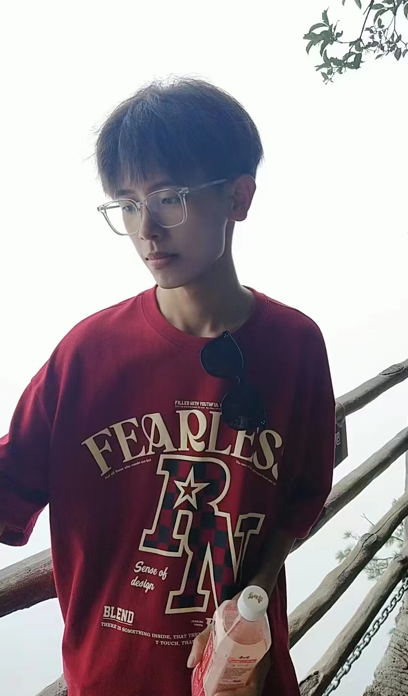
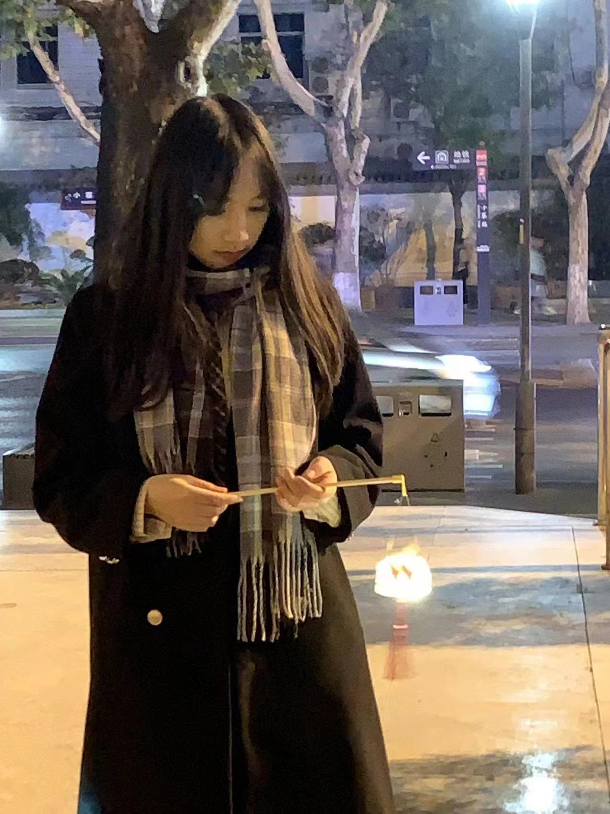

班级活动 - “遇光”微电影
“遇光”微电影是由软工四班制作的，由张超、高奕彤执导，陈小梅、崔湘妮等人担任主演。该片以一个平凡的人的故事为主线，讲述了人们在面对社交恐惧症时的挣扎和成长。
在电影中，主人公因为社交恐惧症而遭受着巨大的痛苦和困扰，他害怕与人交流，害怕社交场合，甚至害怕外出。这种恐惧不仅影响了他的日常生活，也对他的学习和人际关系造成了很大的困扰。然而，通过自己的努力和勇气，她最终克服了社交恐惧，重新找回了自信和勇气。
通过这部微电影，我们深刻地感受到了人性的脆弱和坚强。每个人都有自己的弱点和困难，但只要我们敢于面对，敢于努力，就一定能够找到自己的力量和勇气。这也让我们更加珍惜自己的成长和努力，同时也更加理解和尊重他人的困境和挣扎。
这部微电影让我们对社交恐惧和人性有了更深刻的认识和感悟。相信，在未来的生活中，我们会更加珍惜自己的勇气和成长，同时也会更加关心和理解他人的困境和挣扎，让自己和他人都能够勇敢地面对生活中的挑战。

导演/剪辑 张超
 副导高奕彤
副导高奕彤

主演 陈小梅
 主演 崔湘妮
主演 崔湘妮